Analiza internă: ce rămâne dintr-o listă de puncte tari și slabe când o verifică un evaluator?
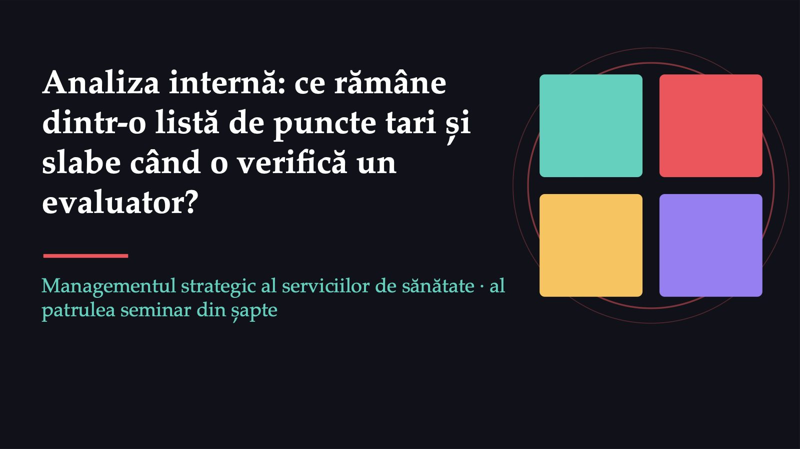
1 / 38Bună ziua. La cursul de dinainte ați lucrat pe planul strategic al spitalului din Zimnicea ca un comitet director, care pregătește alternativele pentru următorul plan. În seminarul acesta citiți același plan din cealaltă parte a mesei: ca evaluatori.
De la comitetul director la evaluator
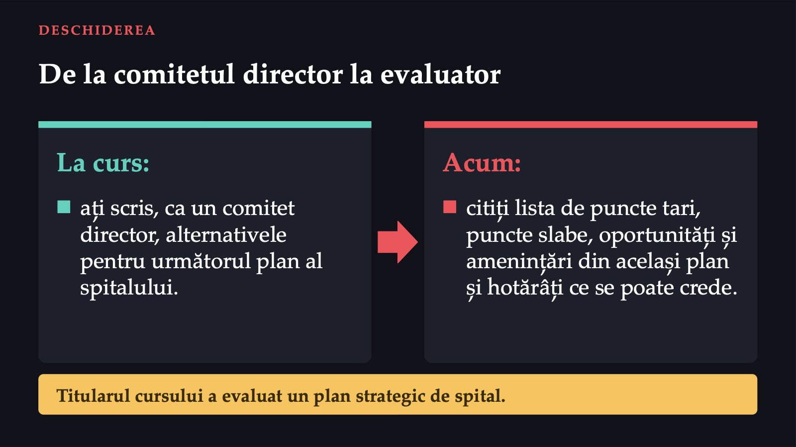
2 / 38Un plan strategic de spital nu ajunge direct de la cine îl scrie la cine îl aplică. Îl citesc consiliul de administrație, uneori autoritatea care finanțează spitalul, uneori un evaluator din afară. Am evaluat un plan strategic de spital. Un evaluator nu întreabă dacă lista este bine scrisă, ci dacă o poate crede și dacă din ea se poate construi o strategie.
Documentul de azi
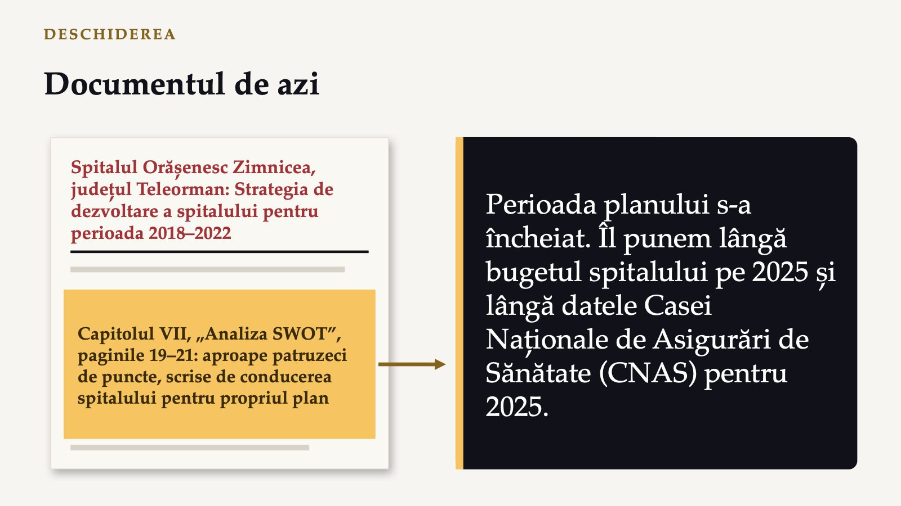
3 / 38Lista a fost scrisă de oameni care cunoșteau spitalul mai bine decât oricine din afară: știau ce secții merg, unde lipsesc oameni, ce clădire au. Merită deci citită cu atenție; din același motiv, are nevoie de un al doilea cititor. Cine scrie despre propria organizație pune la punctele tari ce îl face mândru și la punctele slabe ce îl apasă. Manualul disciplinei spune că punctele tari și slabe sunt adesea subiective și se văd numai prin comparație cu concurenții principali.
Cele patru căsuțe ale analizei SWOT
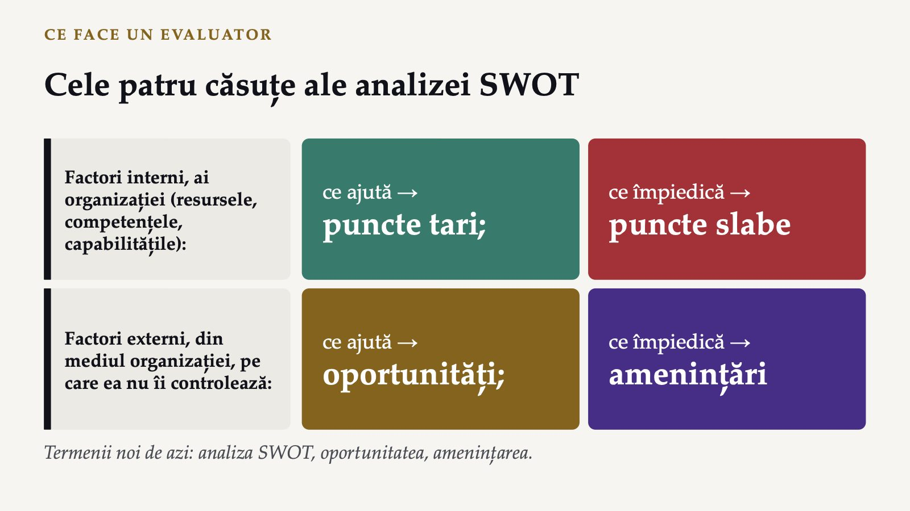
4 / 38Analiza SWOT este cercetarea sistematică a factorilor dinăuntrul unei organizații și a celor din afara ei, puși într-o matrice cu două rânduri și două coloane. Rândul de sus este al organizației, rândul de jos este al lumii din jurul ei. Coloana din stânga adună ce ajută, coloana din dreapta ce împiedică. Jumătatea externă ați făcut-o deja pentru organizația voastră, la al doilea și la al treilea seminar. Numele vine de la inițialele cuvintelor englezești pentru cele patru căsuțe.
Proba căsuței: al cui este factorul?
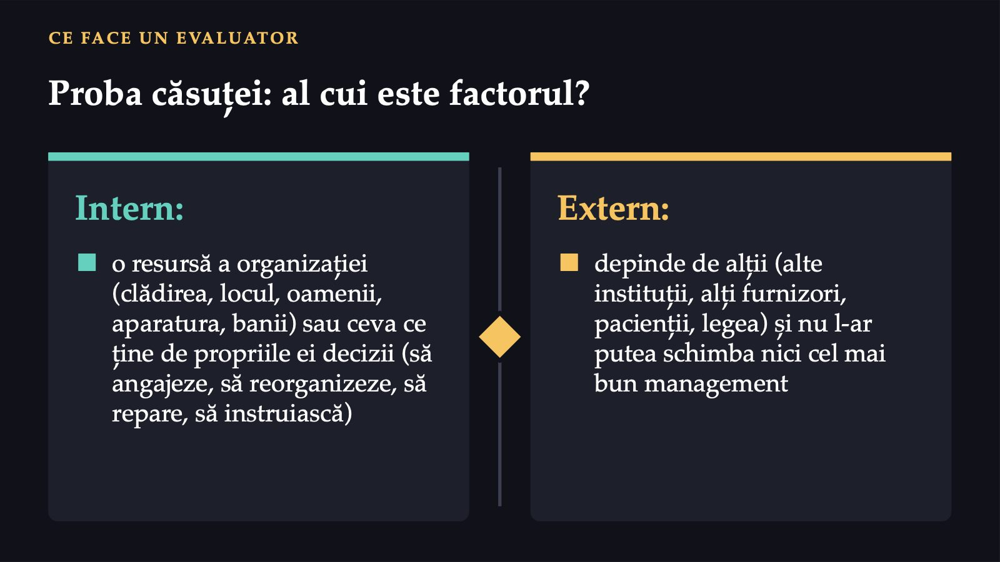
5 / 38În seminar folosim o regulă de lucru simplă. Dacă factorul este o resursă a spitalului sau ține de deciziile lui, este intern și se scrie la punctele tari sau la cele slabe. Dacă depinde de alții, este extern: oportunitate sau amenințare. Un factor care depinde de alte instituții, de alți furnizori, de pacienți sau de lege nu este punctul tare sau slab al spitalului.
Oportunitatea nu este o alternativă
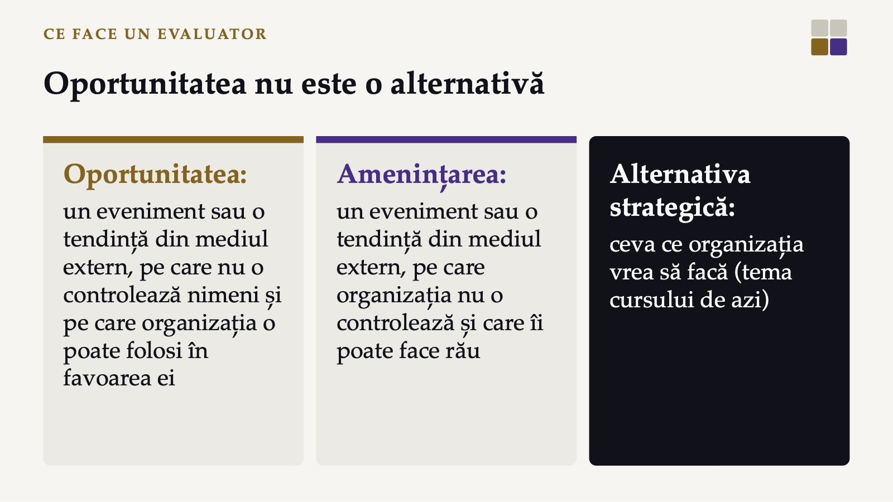
6 / 38Pentru oportunități mai punem o întrebare: este un eveniment din afara spitalului sau este ceva ce spitalul vrea să facă? Manualul observă că oportunitățile sunt prezentate frecvent ca alternative strategice, în loc să fie factori externi independenți. Același factor extern poate fi, pentru aceeași organizație, și oportunitate, și amenințare; de aceea, disputa „oportunitate sau amenințare?” contează mai puțin decât întrebarea „este, într-adevăr, în afara spitalului?”.
Cele trei întrebări ale evaluatorului
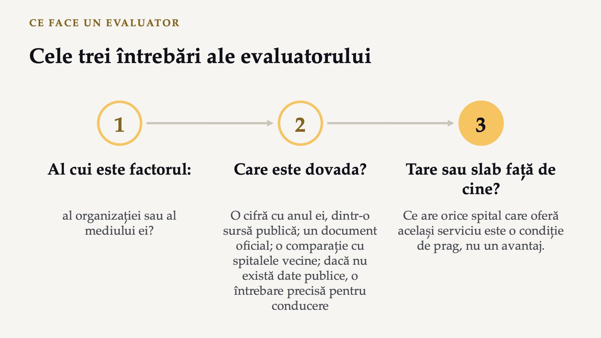
7 / 38Pentru fiecare punct al listei, evaluatorul pune trei întrebări. Le folosiți azi în sală și, acasă, pentru organizația voastră. Un punct tare fără dovadă este o părere. Un punct tare contează când este valoros pentru pacienți și pentru cei care plătesc și când nu îl au toți ceilalți; condiția de prag o știți de la cursul despre analiza internă.
Rămâne:
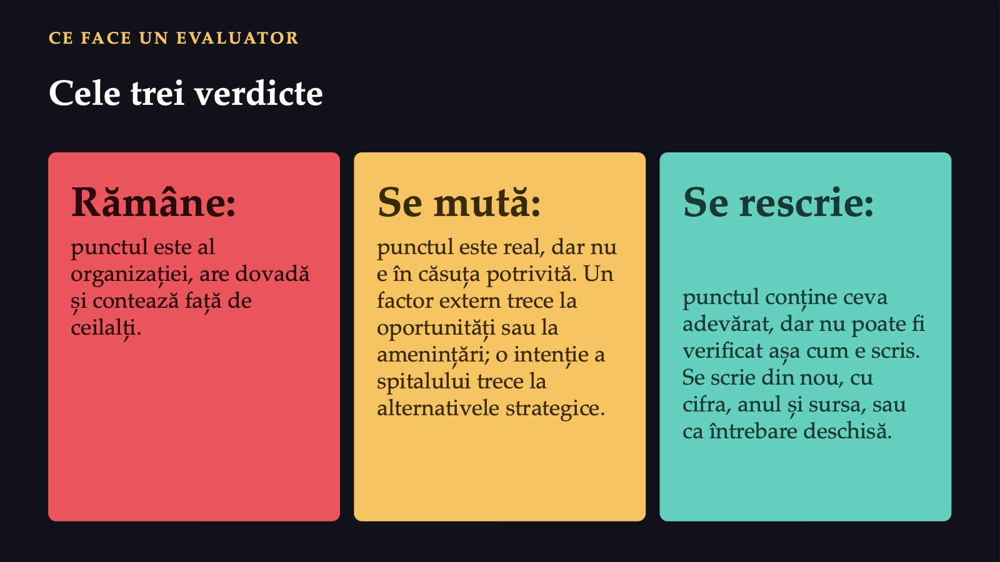
8 / 38Răspunsurile la cele trei întrebări duc la unul dintre cele trei verdicte. Nu ghiciți o listă de verdicte stabilită dinainte: o echipă care argumentează altfel, cu dovadă, are dreptate să o facă. Contează dovada pe care o puneți lângă verdict.
Un exemplu, fără verdict: primul punct tare
![CE FACE UN EVALUATOR Un exemplu, fără verdict: primul punct tare „adresabilitate crescuta datorita situarii in partea de sud a tarii” (planul, p. 19) Argumentul planului: Spitalul Județean de Urgență Alexandria la 45 km, Spitalul Municipal Turnu Măgurele la 65 km, Spitalul Județean de Urgență Giurgiu la 60 km În punct sunt două lucruri: locul spitalului și o afirmație despre pacienți. Fiecare trece separat prin cele trei întrebări. Pe hartă: ce parte a punctului se vede și ce parte nu se vede? Notați. Harta: Zimnicea în județul Teleorman · Wikimedia Commons · domeniu public · autor: Radufan, Wikipedia în limba română](diapozitive/LP04/009.jpg) 9 / 38
9 / 38Luați primul punct tare al planului. Evaluatorul îl desparte în două. Prima parte este locul spitalului, cu distanțele până la celelalte spitale. A doua parte, „adresabilitatea crescută”, spune ceva despre pacienți: că vin mulți. Fiecare parte trece separat prin cele trei întrebări, iar verdictul îl scrieți voi, în echipă.
Tabelul echipei: patru coloane
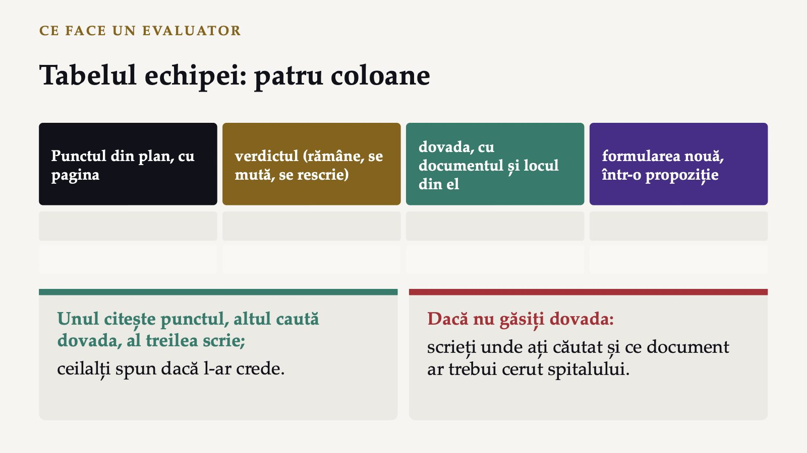
10 / 38Tabelul este același pentru toată ora. Nu se notează și rămâne la voi; acasă vă servește ca model pentru organizația voastră. Când nu găsiți dovada, și acesta este un rezultat: scrieți unde ați căutat și ce document ați cere conducerii.
Fișa de date (1): spitalul în planul din 2018
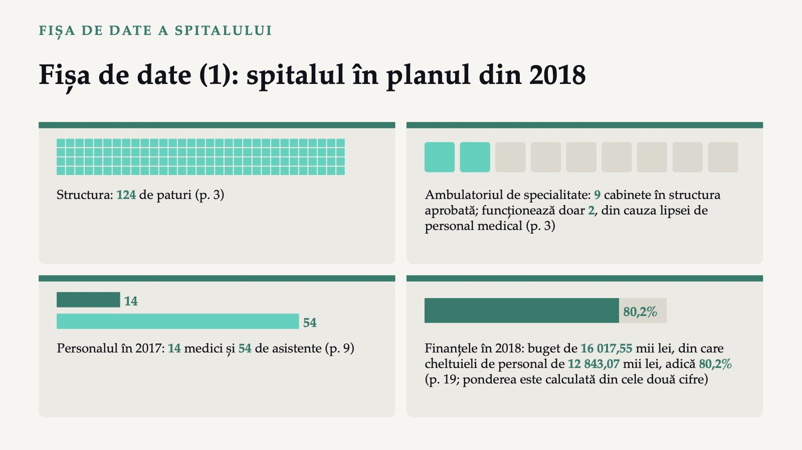
11 / 38Fișa de date are o pagină și o primiți tipărită. Prima parte vine din plan: cum se descria spitalul pe sine în 2017 și 2018. Toate cifrele de pe fișă sunt din documente publice; nu folosiți altele în sală.
Fișa de date (2): veniturile din bugetul pe 2025, programul rectificat (mii lei)
![FIȘA DE DATE A SPITALULUI Fișa de date (2): veniturile din bugetul pe 2025, programul rectificat (mii lei) 47,7% 42,8% Sursa: bugetul pe 2025 al spitalului, formularul 11/02, p. 1; ponderile sunt calculate Total: 25 726,50 · cheltuielile de personal: 20 890,00, adică 81,2% din cheltuieli Contractele cu casele de asigurări de sănătate: 12 279,00 (47,7%) Subvențiile din Fondul național unic de asigurări sociale de sănătate (FNUASS), pentru creșterile salariale: 11 000,00 (42,8%) Contractele cu direcțiile de sănătate publică, din bugetul de stat: 1 940,00 (7,5%) Subvențiile din bugetele locale, curente și de capital: 190,00 și 84,00 (1,1%) Alte venituri din prestări de servicii și alte activități: 233,50 (0,9%)](diapozitive/LP04/012.jpg) 12 / 38
12 / 38A doua parte a fișei vine din bugetul spitalului pe 2025, publicat pe situl lui. Este bugetul aprobat, nu cel executat: arată ce a plănuit spitalul să încaseze și să cheltuiască, nu ce s-a întâmplat. Tabelul se citește de sus în jos.
Fișa de date (3): datele CNAS pentru 2025
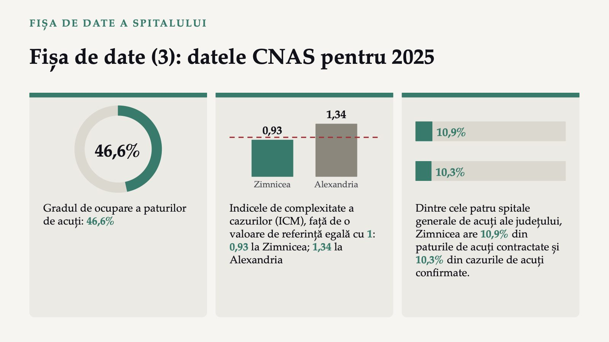
13 / 38A treia parte vine din aplicația „Performanță Spitale Publice” a casei de asigurări, pe care ați folosit-o la seminarul trecut. Indicele de complexitate compară complexitatea medie a cazurilor unui spital cu o valoare de referință egală cu 1. Atenție la ani: aceste cifre sunt din 2025, iar lista pe care o verificați este din 2018. Gradul de ocupare se calculează după convenția aplicației CNAS; se compară numai cu al altor spitale din aceeași aplicație.
22
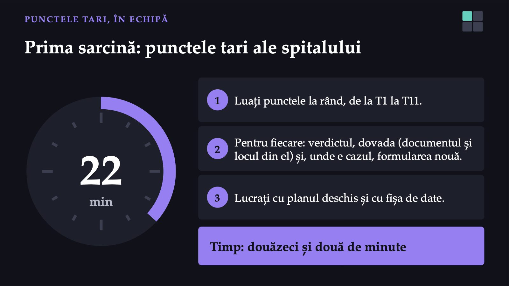
14 / 38Începeți cu punctele tari, toate de la pagina 19. Literele de pe listă sunt doar pentru orientare: T pentru punctele tari, S pentru cele slabe, O pentru oportunități, A pentru amenințări. Lângă fiecare verdict, dovada.
Punctele tari din plan (1), p. 19
 15 / 38
15 / 38Aveți punctele tari așa cum le-a scris spitalul. Cele dintre ghilimele sunt copiate cuvânt cu cuvânt, fără diacritice, cum apar în plan; celelalte sunt redate pe scurt. Pentru forma completă, deschideți planul la pagina 19.
Punctele tari din plan (2), p. 19
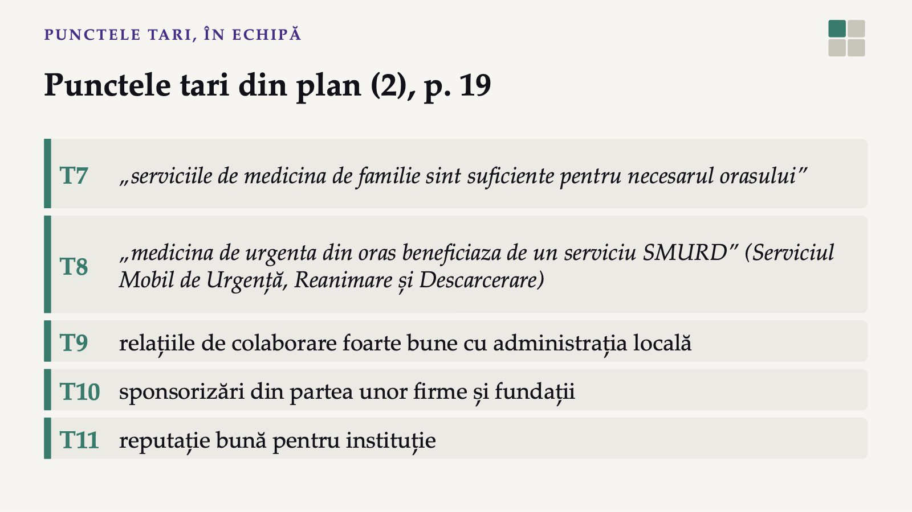
16 / 38Câteva puncte au cifre, cele mai multe nu. Acolo unde planul nu dă cifra, căutați-o în fișa de date; dacă nu este nici acolo, scrieți întrebarea pe care ați pune-o conducerii.
12
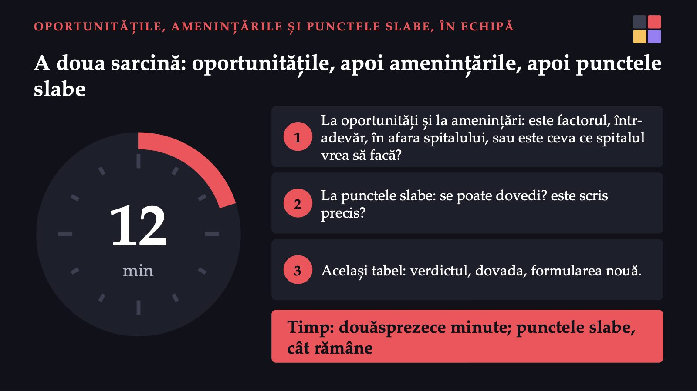
17 / 38Ordinea are un motiv: la oportunități se vede cel mai bine diferența dintre un eveniment din afara spitalului și o intenție a lui. Punctele slabe le luați cât vă rămâne timp.
Oportunitățile din plan, p. 20
![OPORTUNITĂȚILE, AMENINȚĂRILE ȘI PUNCTELE SLABE, ÎN ECHIPĂ Oportunitățile din plan, p. 20 O1 prioritizarea națională a spitalului pentru finanțări nerambursabile de reabilitare și dotare O2 schimbarea structurii: un compartiment de oftalmologie în secția de chirurgie; scoaterea compartimentului de medicină internă cronici din subordinea secției de medicină internă O3 relații bune cu casa județeană de asigurări de sănătate, cu direcția de sănătate publică, cu medicii de familie, cu cabinetele private, cu spitalul județean și cu clinicile O4 relații bune între spital și consiliul local O5 saloane cu 3–4 paturi, cu confort hotelier sporit, inclusiv rezerve în regim de plată O6 un compartiment cu 6 paturi de otorinolaringologie (ORL) în secția de chirurgie, pe termen mediu, odată cu venirea medicului de specialitate](diapozitive/LP04/018.jpg) 18 / 38
18 / 38Șase oportunități. Pentru fiecare, aceeași întrebare: s-ar putea întâmpla fără ca spitalul să hotărască ceva?
Amenințările din plan, p. 20–21
![OPORTUNITĂȚILE, AMENINȚĂRILE ȘI PUNCTELE SLABE, ÎN ECHIPĂ Amenințările din plan, p. 20–21 A1 subfinanțarea serviciilor contractate cu casa de asigurări de sănătate a județului Teleorman A2 creșterea sărăciei și a șomajului A3 „Scaderea natalitatii la nivel national” A4 scăderea adresabilității prin dirijarea cazurilor ușoare și medii spre medicina de familie și ambulatoriu A5 cazuri sociale internate prin presiuni externe (ambulanța, autoritățile) A6 creșterea datoriilor A7 instabilitatea legislativă A8 creșterea costurilor asistenței medicale A9 limitarea posibilităților de completare a schemei de personal A10 „Tendinţa migrării corpului medical către ţările UE” (Uniunea Europeană)](diapozitive/LP04/019.jpg) 19 / 38
19 / 38Zece amenințări, aceeași întrebare: ține de spital sau de ce se întâmplă în jurul lui?
Punctele slabe din plan, p. 20
![OPORTUNITĂȚILE, AMENINȚĂRILE ȘI PUNCTELE SLABE, ÎN ECHIPĂ Punctele slabe din plan, p. 20 S1 „Venituri proprii reduse” S2 ambulatoriul de specialitate slab organizat, cu personal medical și dotare deficitare S3 lipsa responsabilizării șefilor de secții, compartimente și laboratoare S4 „Lipsa conditiilor optime hoteliere” S5 deficiență în asumarea responsabilităților S6 „Deficit medici” S7 „Autorizatie sanitara de functionare cu plan de conformare” S8 personal medical insuficient S9 spitalul și ambulatoriul necesită lucrări ample de reabilitare S10 lipsa aparaturii medicale moderne pentru anumite specialități S11 vârsta înaintată, în prag de pensionare, a unor medici](diapozitive/LP04/020.jpg) 20 / 38
20 / 38Unsprezece puncte slabe. Pentru fiecare: se poate dovedi și este scris destul de precis încât un cititor din afară să știe ce trebuie îndreptat?
A
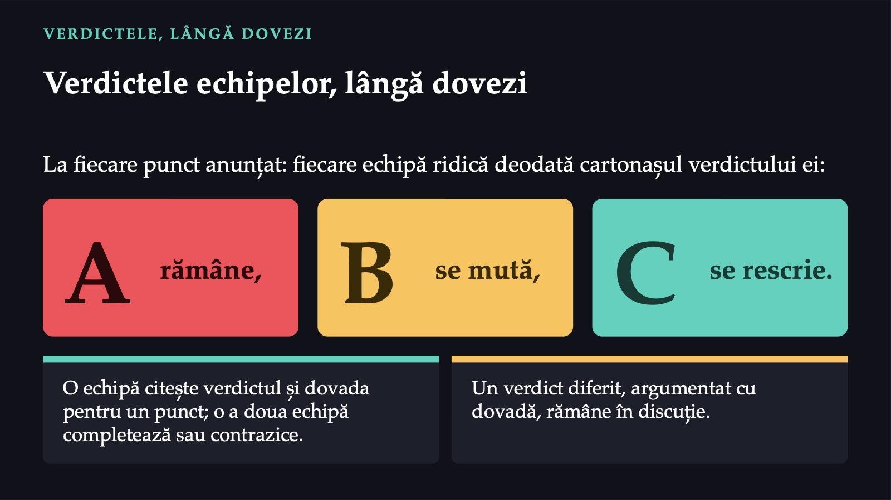
21 / 38Nu vom auzi toate echipele; luăm punctele la care verdictele diferă cel mai mult. Lângă verdictul echipei punem dovada din fișa de date.
T1: locul și „adresabilitatea crescută”
![VERDICTELE, LÂNGĂ DOVEZI T1: locul și „adresabilitatea crescută” Locul spitalului este o resursă tangibilă: nu poate fi ocupat de altă organizație și nu poate fi copiat întocmai. „Adresabilitatea crescută”, în datele CNAS pentru 2025: ocuparea paturilor de acuți, 46,6%; 10,9% din paturile și 10,3% din cazurile de acuți ale celor patru spitale generale ale județului; ICM 0,93 (Alexandria, 1,34) Lectura unui evaluator: locul rămâne, rescris cu dovada; adresabilitatea se rescrie; plecarea pacienților spre spitalele mari trece la amenințări. Întrebarea pentru conducere: de ce un spital fără alt spital în apropiere nu își umple paturile?](diapozitive/LP04/022.jpg) 22 / 38
22 / 38Manualul numără locul printre resursele tangibile și spune că un loc anume poate fi un punct tare, pentru că nu poate fi copiat. Celelalte spitale și alegerea pacienților țin însă de mediul extern. Cifrele din 2025 nu arată un spital la care pacienții se înghesuie, ci unul cu paturi neocupate în bună parte și cu cazuri mai puțin complexe decât spitalul județean. Planul însuși scrie, la amenințări, despre scăderea adresabilității.
T3: „personal medical calificat”
![VERDICTELE, LÂNGĂ DOVEZI T3: „personal medical calificat” Lectura unui evaluator: punctul se rescrie; la punctele slabe rămâne lipsa de personal, cu cifra și cu anul ei. Calificarea se cere oricui lucrează ca medic sau ca asistent, în orice spital: este o condiție de prag, nu un avantaj. Planul își contrazice punctul la pagina următoare: deficitul de medici, personalul medical insuficient, medicii în prag de pensionare. Dovada din plan: în ambulatoriu, 9 cabinete aprobate și 2 care funcționează, din lipsă de personal; în 2017, 14 medici și 54 de asistente, pentru 124 de paturi](diapozitive/LP04/023.jpg) 23 / 38
23 / 38Ce poate rămâne la punctele tari este ceva precis și dovedit, de pildă o competență pe care o au puțini în zonă, cu numele specialității și cu dovada ei. Cifrele de personal din plan sunt din 2017; un evaluator de azi ar cere numărul actual al medicilor, pe specialități, înainte să accepte orice formulare.
Trei perechi care se contrazic
![VERDICTELE, LÂNGĂ DOVEZI Trei perechi care se contrazic Evaluatorul păstrează formularea pe care o susține dovada. Autorizația de funcționare este, oricum, o condiție de prag. Tare: „personal medical calificat” slab: „Deficit medici”, personal medical insuficient, medici în prag de pensionare Tare: „conditii hoteliere de buna calitate in toate sectiile si compartimentele” slab: „Lipsa conditiilor optime hoteliere”, lucrări ample de reabilitare Tare: „autorizatii sanitare de functionare” slab: „Autorizatie sanitara de functionare cu plan de conformare”](diapozitive/LP04/024.jpg) 24 / 38
24 / 38O pereche contradictorie nu înseamnă că autorii au greșit de două ori. Poate însemna că lista a fost adunată de la mai mulți oameni, fără ca cineva s-o citească de la un capăt la altul. Pentru autorizație, formularea de la punctele slabe este mai precisă; ce cuprindea planul de conformare nu se vede din listă, iar evaluatorul cere documentele autorizării.
T7, T8 și T10: ce nu ține de spital
![VERDICTELE, LÂNGĂ DOVEZI T7, T8 și T10: ce nu ține de spital Medicii de familie din oraș sunt furnizori separați; SMURD este un serviciu al sistemului de urgență, nu al spitalului. Amândouă sunt factori externi: se mută la oportunități, dacă ajută spitalul. Planul scrie la amenințări chiar opusul: cazurile ușoare și medii îndreptate spre medicina de familie scad adresabilitatea spitalului. Același factor extern este și oportunitate, și amenințare. Sponsorizările țin de generozitatea altora; fără cifră, punctul se rescrie ca întrebare: ce sume au venit și de la cine.](diapozitive/LP04/025.jpg) 25 / 38
25 / 38SMURD aduce pacienți la spital, iar medicii de familie îi trimit; spitalul nu hotărăște însă nimic din ce fac ei. Capacitatea spitalului de a atrage sponsori ar putea fi o capabilitate, dacă ar avea dovadă: câți bani, de la cine, pentru ce. Bugetul pe 2025 nu are, pe pagina veniturilor, un rând separat pentru donații și sponsorizări.
O2, O5, O6: oportunități care sunt, de fapt, alternative
![VERDICTELE, LÂNGĂ DOVEZI O2, O5, O6: oportunități care sunt, de fapt, alternative Saloanele cu 3–4 paturi și rezervele cu plată, compartimentul de ORL cu 6 paturi, compartimentul de oftalmologie: lucruri pe care spitalul vrea să le facă Locul lor: capitolul alternativelor strategice, tema cursului de azi În analiza SWOT pot rămâne factorii externi care le fac necesare: „numeroasele cazuri de boli cronice care sint in zona”; „reducerii numarului de paturi finantate” O1, prioritizarea națională pentru finanțări nerambursabile: un factor extern, rămâne.](diapozitive/LP04/026.jpg) 26 / 38
26 / 38Manualul descrie exact această greșeală: oportunitățile sunt prezentate frecvent ca alternative. Bolile cronice din zonă și reducerea paturilor finanțate sunt factori externi și pot rămâne la oportunități sau la amenințări, cu dovada lor; saloanele și compartimentele, nu. Relațiile bune cu casa de asigurări, cu direcția de sănătate publică sau cu spitalul județean sunt, în schimb, ale spitalului: un evaluator le-ar muta la punctele tari, dacă au dovadă.
A6 și A5: datoriile și cazurile sociale
 27 / 38
27 / 38Și amenințările se pot verifica pe date publice. Natalitatea, de exemplu, se poate preciza la nivelul județului, din seriile Institutului Național de Statistică, cum ați lucrat la analiza externă.
S1: „Venituri proprii reduse”
![VERDICTELE, LÂNGĂ DOVEZI S1: „Venituri proprii reduse” 47,7% 42,8% 90,5% Bugetul pe 2025: contractele cu casele de asigurări (47,7%) și subvențiile din FNUASS (42,8%) fac împreună 90,5% din venituri. Cuvintele au două sensuri: formularul bugetului numește „venituri proprii” toate veniturile; planul desparte contractul cu casa de asigurări de „venituri proprii inclusiv coplata”. Lectura unui evaluator: punctul rămâne, rescris cu cifra, în sensul planului. Rândul „alte venituri din prestări de servicii și alte activități” (0,9%) nu spune ce cuprinde. 2018 80,2% 2025 81,2% Cheltuielile de personal: 81,2% în 2025, aproape ca în 2018 (80,2%).](diapozitive/LP04/028.jpg) 28 / 38
28 / 38Spitalul trăiește, în proporție de nouă zecimi, din banii asigurărilor de sănătate. Ponderea cheltuielilor de personal arată că are puțin loc pentru alte cheltuieli, de la medicamente la reparații. Aceasta nu este o judecată despre buna sau proasta gestionare, ci o constatare pe care orice alternativă strategică trebuie s-o țină în minte.
De ce o listă nu este încă o analiză
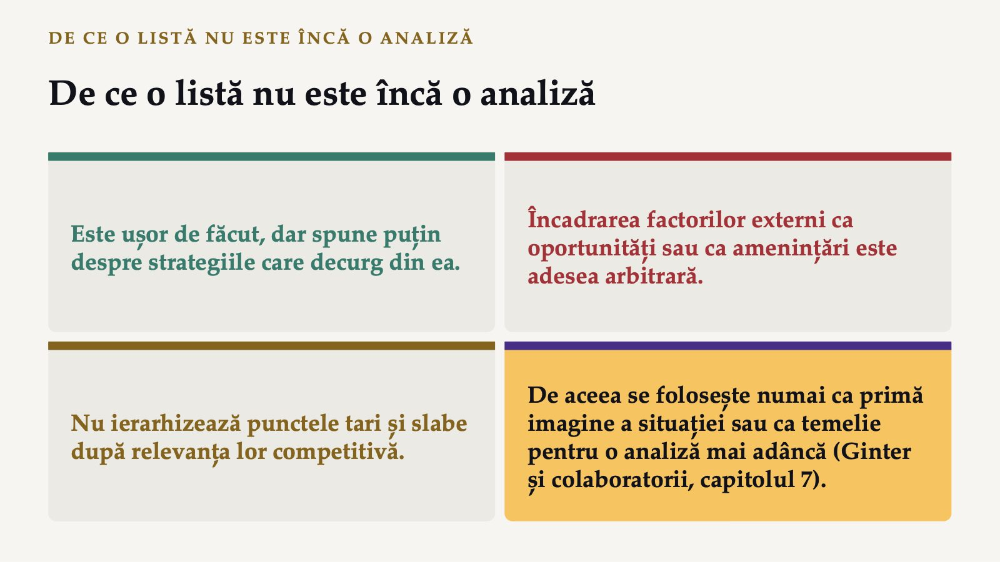
29 / 38După verificare, lista spitalului arată altfel: mai scurtă la punctele tari, mai precisă la punctele slabe, cu oportunitățile curățate de alternative. Dar nici lista curățată nu este încă o analiză. Manualul disciplinei îi numește limitele.
Ordinea: verificați, judecați, apoi puneți în matrice
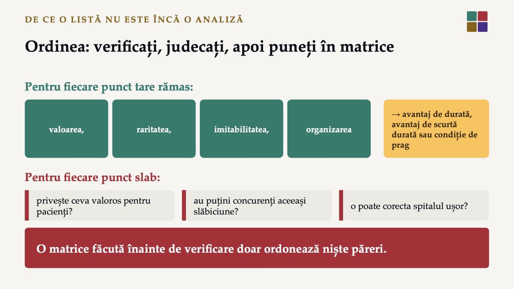
30 / 38Cele patru întrebări le știți de la cursul despre analiza internă; la manual, a patra este sustenabilitatea. Abia după acest pas lista devine o analiză internă: o judecată despre ce poate face organizația, cu ce are și cu ce știe.
Prioritățile planului, lângă punctele lui slabe
![DE CE O LISTĂ NU ESTE ÎNCĂ O ANALIZĂ Prioritățile planului, lângă punctele lui slabe Legătura dintre factorii externi și avantajele interne: cursul din 23.11.2026 Întrebarea evaluatorului: cu ce oameni se deschid noile specialități și ce punct tare ar face posibil acest lucru? Prioritățile (p. 21): diversificarea gamei de servicii spitalicești; noi specialități în ambulatoriul integrat; mai multe servicii acordate în ambulatoriu Același plan (p. 3): ambulatoriul funcționa cu 2 din cele 9 cabinete aprobate, din lipsă de personal.](diapozitive/LP04/031.jpg) 31 / 38
31 / 38Un evaluator nu spune că prioritățile sunt greșite; întreabă cum se leagă de punctele slabe. Analiza SWOT nu face singură această legătură; o facem la cursul din 23.11.2026.
„Dacă ați fi în consiliul de administrație al spitalului, ce ați cere conducerii înainte să aprobați lista de puncte tari?”
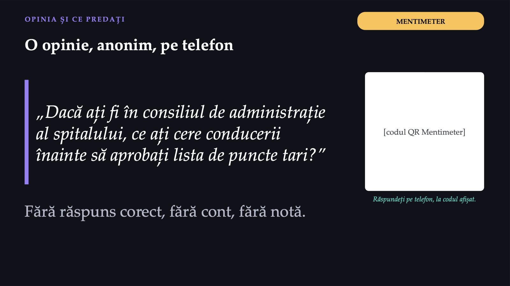
32 / 38O singură întrebare, deschisă și anonimă. Răspunsurile nu se notează; citim câteva în sală.
Kahoot: cinci întrebări despre seminarul de azi
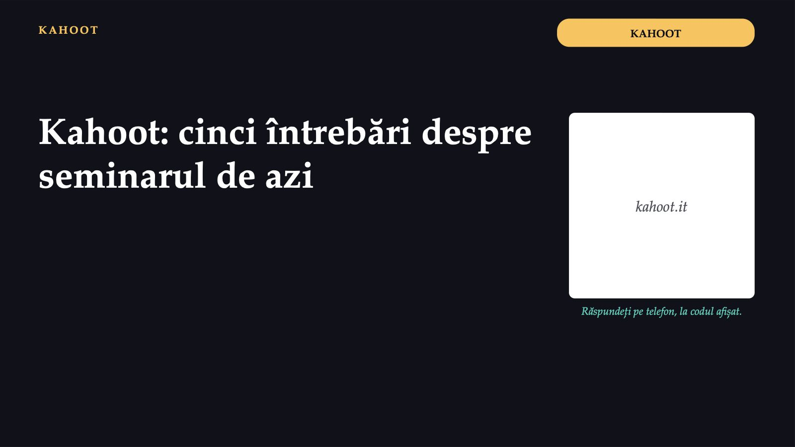
33 / 38Cinci întrebări despre ideile seminarului: proba căsuței, verdictele, condiția de prag, dovada, ordinea analizei. Nu se notează.
Ce predați: analiza internă și analiza SWOT a organizației voastre
 34 / 38
34 / 38A doua oră a seminarului este ora echipei și o puteți face acasă, împreună, în aceeași cameră sau într-o întâlnire pe Teams. Termenul este, de data aceasta, duminica de după cursul din 23.11.2026, nu duminica de după seminar.
2
![OPINIA ȘI CE PREDAȚI Cum se notează: 0, 1 sau 2 puncte 2 puncte: cel puțin cinci puncte tari și cinci puncte slabe, fiecare cu dovada și cu locul pe lanțul valorii; fiecare punct tare judecat cu cele patru întrebări (avantaj sau condiție de prag); matricea SWOT completă, cu oportunitățile și amenințările din analiza externă, verificate; concluzia în trei-patru propoziții și lista surselor 1 punct: analiza predată la termen, cu surse, dar care nu îndeplinește toate aceste condiții 0 puncte: analiza nepredată sau fără surse](diapozitive/LP04/035.jpg) 35 / 38
35 / 38Pragul pentru nota maximă este de cel puțin cinci puncte tari și cinci puncte slabe. Contează însă dovada fiecăruia: cinci puncte fără dovadă nu ajung.
Ora echipei, pas cu pas
![ORA ECHIPEI, ACASĂ Ora echipei, pas cu pas 1 Reluați fișa organizației, analiza externă și harta concurenților de la primele trei seminarii. 2 Desenați lanțul valorii: ce face organizația înainte, în timpul și după serviciu; activitățile de sprijin. 3 Scrieți cel puțin cinci puncte tari și cinci puncte slabe, fiecare cu dovada și cu anul ei. 4 Verificați fiecare punct cu cele trei întrebări ale evaluatorului. 5 Judecați punctele tari cu cele patru întrebări: avantaj sau condiție de prag. 6 Completați matricea SWOT și scrieți concluzia. 7 Coordonatorul trimite formularul.](diapozitive/LP04/036.jpg) 36 / 38
36 / 38Pașii sunt în notele seminarului, cu explicația fiecăruia. Concurenții din harta de la seminarul trecut sunt cei față de care judecați punctele tari.
Unde găsiți dovezile pentru organizația voastră
![ORA ECHIPEI, ACASĂ Unde găsiți dovezile pentru organizația voastră Orice cifră poartă sursa și anul de referință. Un instrument de inteligență artificială nu este o sursă de cifre. Situl organizației: structura, secțiile și compartimentele, serviciile, uneori personalul pe specialități Pagina de buget, unde există: de unde vin banii și pe ce se cheltuiesc Pentru spitalele publice: aplicația „Performanță Spitale Publice” a CNAS (paturile, cazurile, durata internărilor, gradul de ocupare, complexitatea cazurilor) Rapoartele anuale de activitate și indicatorii de performanță ai managementului; dacă lipsesc de pe sit, scrieți asta.](diapozitive/LP04/037.jpg) 37 / 38
37 / 38Un document vechi, ca planul din 2018 al spitalului, se pune lângă date recente înainte de a spune ceva despre organizația de azi. Instrumentele de inteligență artificială le puteți folosi numai pentru redactare, cu declarație.
Rezolvarea se vede în formularul fișei, după ce o predați.
Rezolvarea se vede în formularul fișei, după ce o predați.
Săgeți sau spațiu: navigare · O: vedere de ansamblu · N: notele prezentatorului · F: ecran complet · Esc: închidere